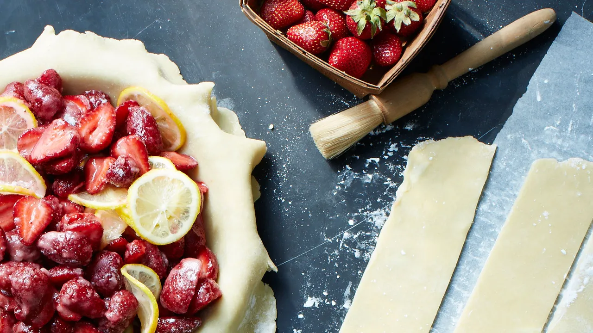

Strawberry Pie
It's sweet (never had it)
Description
A strawberry pie is a classic dessert, consisting of a flaky pastry crust filled with fresh strawberries, sweetened with sugar, and sometimes thickened with cornstarch or tapioca. Its vibrant red color and sweet, tangy flavor make it a favorite during the warmer months. Typically served with whipped cream or vanilla ice cream, it's a simple yet irresistible indulgence that captures the essence of homemade goodness.
Ingredients
- Fresh strawberries
- Pastry crust (made with flour, butter, water, and salt)
- Cornstarch or tapioca (for thickening)
- Lemon juice (optional, for added flavor and tartness)
- Whipped cream or vanilla ice cream (for serving)
- Sugar

How do you make this?
Follow these steps
- the Crust: Make or buy a pastry crust. Roll it out and place it into a pie dish.
- Prep the Strawberries: Wash and hull the strawberries. Slice them if desired.
- Make the Filling: In a bowl, mix the strawberries with sugar, cornstarch or tapioca, and a splash of lemon juice.
- Fill the Crust: Pour the strawberry mixture into the prepared pie crust.
- Add the Top Crust (Optional): You can add a lattice or a full crust on top, or leave it open-faced.
- Bake: Bake the pie in a preheated oven until the crust is golden brown and the filling is bubbling.
- Cool: Allow the pie to cool before serving.
- Serve: Serve slices of the pie with whipped cream or vanilla ice cream, if desired.
ENJOY! or go back